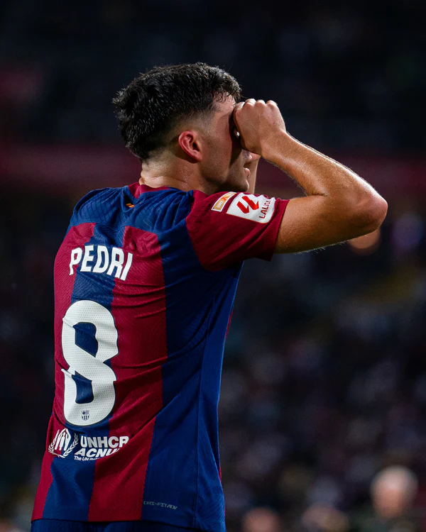
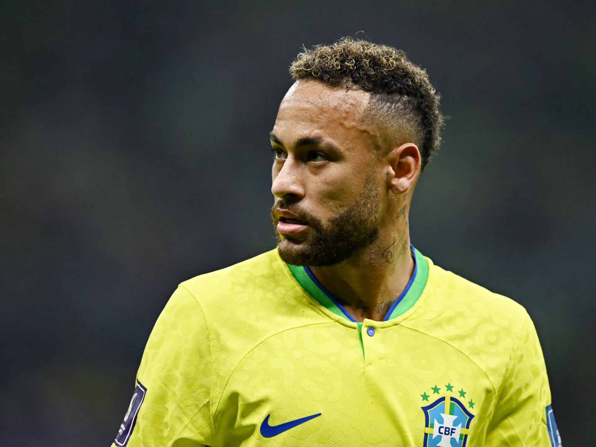

1.pedri Gonzalez
0n 2 September 2019, Barcelona reached an agreement
with Las Palmas for the transfer of Pedri, effective as of the
following 1 July 2020. The player agreed to a
two year contract with theb Catalan club, who paid €5
million for the deal, which would increase as he fulfilled various
clauses in his contract. [11]Assigned to the main squad for the
2020-21 season and with the number 16 shirt,[12] Pedri
made his debut on 27 September, replacing
Philippe Coutinho in 4-0 home win againstb
Villarreal in La Liga.[13] tafe.[14] v Pedri scored his
first goal for the club on his UEFA Champions League debu

2.Jude Bellinghum
Bellingham joined Birmingham City as an under-8, became the club's
youngest first-team plat the ageayer when he made his senior debut in
August 2019, at the age of 16 years, 38 days, and played
regularly during the 2019–20 season. He joined
Borussia Dortmund in July 2020, and in his first appearance
became their youngest goalscorer. Over three seasons with the club he
made 132 appearances and won theb 2020–21 DFB-Pokal; his
performances in theb 2022–23 season helped Dortmund finish as
runners-up and earned him the Bundesliga Player of the Season
award.
3.Cristiano Ronaldo
Ronaldo began his senior career with Sporting CP, before signing with
Manchester United in 2003, winning the FA Cup in his first season. He
would also go on to win three consecutive Premier League titles, the
Champions League and the FIFA Club World Cup; at age 23, he won his
first Ballon d'Or. Ronaldo was the subject of the then-most expensive
association football transfer when he signed for Real Madrid in 2009
in a transfer worth €94 million (£80 million). He became a key
contributor and formed an attacking trio with Karim Benzema and Gareth
Bale which was integral to the team winning four Champions

4.Neymar
Neymar made his professional debut with Santos in 2009, and in 2011,
he helped them win their first Copa Libertadores in nearly 50
years.[11] In 2013, he joined Barcelona and became part of an
attacking trio with Lionel Messi and Luis Suárez, dubbed MSN. Winning
the continental treble of La Liga, the Copa del Rey, and the UEFA
Champions League in the trio's first season, Neymar was the joint-top
scorer of the Champions League campaign and top scorer in the Copa del
Rey.
